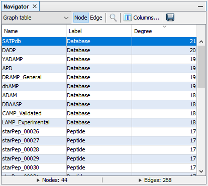

3 Working with networks
3.1 Metadata network
The construction of metadata network is accessible from the menu option Tools ➡️ Networks ➡️ Metadata Network.
In metadata networks, nodes representing metadata are connected to nodes representing peptides by the following relationships:
| Metadata node | Relationship |
|---|---|
| Origin | produced_by |
| Target | assessed_against |
| Function | related_to |
| Database | compiled_in |
| Crossref | linked_to |
| Nterminus | modified_by |
| UnusualAA | constituted_by |
| Cterminus | modified_by |
| Subcategory of another node | is_a |
3.2 Similarity network
The construction of similarity network is accessible from the menu option Tools ➡️ Networks ➡️ Similarity Network. To create a similarity network, we first recommended to configure the workflow using the Configuration Wizard and then press the button Run.
- Runs the workflow for building the similarity network.
- Opens Configuration Wizard (Sect.3.2.1).
- Changes between Nodes and Edges tabs.
- Applies PCA coordinates changes.
- Selects X and Y axis for PCA coordinates.
- PCA results panel.
- Similarity threshold selector: After changing the value, it is necessary to press
Apply. - Network Density plot: Helps to decide a similarity threshold.
3.2.1 Configuration wizard
This section will show the configuration wizard for mapping and visualizing the Chemical Space.
3.2.1.1 Wizard Step 1: Input sequences
To remove redundant sequences, press Yes (recommended). Then, you can choose between local or global alignment, multiple substitution matrices, and a identity threshold.
3.2.1.2 Wizard Step 2: Feature extraction
If you already calculated a set of molecular descriptors, you can select the first option and press Next. If not, select the new descriptors to be calculated.
3.2.1.3 Wizard Step 3: Feature selection
If you plan to use all available descriptors, select the first option, and press Next. If not, select and configure the two-stage unsupervised feature selection method.
3.2.1.4 Wizard Step 4: Distance function.
Select the desired distance function and the standardization/normalization for the calculated descriptors.
3.2.1.5 Wizard Step 5: Network model
For generating a network model, select between the Half-Space Proximal Network or the traditional Chemical Space Network/Similarity Network (not recommended for large datasets). For more details, please refer to the methodological paper.
The position of nodes may be determined by the first two principal components of descriptor space. However, layout algorithms are recommended for a better rearrangement of nodes.
3.3 Network model options
After creating the network model, the following options are available.
- Positioning nodes.
- Adding/removing similarity edges.
- Embedding new peptides. When new peptides are projected, a network model will be opened into a new workspace.
3.4 Layout algorithms
A layout algorithm option may be opened from Tools ➡️ Network ➡️ Layout ➡️ [layout option]. The main graph layouts available are Fruchterman Reingold, ForceAtlas 2, Yifan Hu Proportional, and Random Layout. Any layout result could be adjusted using the options Rotate, Contraction, Expansion, Noverlap, and Label Adjust.
3.5 Appearance
This panel is opened from Tools ➡️ Network ➡️ Appearance.
- Runs the appearance customization of either nodes or edges. If the
Previewwindow is active in theNetwork visualizationwindow, you need to press the buttonRefreshfrom mentioned window to update the network view. - Selects the elements (either
NodesorEdges) whose appearance is to be changed. - Applies configuration via
Unique,Partition, orRankingfunctions. For nodes, the calculated measures are available asPartitionorRankingoptions. - Modifiable configurations panel. For color options, you need to press and drag the cursor to the desired color, or press right-click to open the color window.
- Changes the color of either
NodesorEdges(if edges are not taking the color of attached nodes, see sect. 2.5.2). - Changes
Nodessize (this option only applies to nodes). - Changes label color of either or
NodesorEdges. - Changes label size of either or
NodesorEdges. - Resets current options.
- Resets customization to the default appearance.
3.6 Clustering
A clustering panel may be opened from Tools ➡️ Network ➡️ Clustering ➡️ [clustering algorithm]. For instance, k-means:
After running the clustering algorithm, you may visualize the network structure in Tools ➡️ Network ➡️ Appearance ➡️ Nodes ➡️ Partition.
3.7 Centrality
A centrality panel may be opened from Tools ➡️ Network ➡️ Centrality ➡️ [measure option]. For instance, Betweenness Centrality:
After running the centrality measure, you may customize the appearance of nodes according to the centrality values in Tools ➡️ Network ➡️ Appearance ➡️ Nodes ➡️ Ranking.
3.8 Case study
In this case study, we will try to answer the following questions for a given sequence of interest.
>Example sequence
FLPAIVGAAGQFLPKIFCAISKKC3.8.1 Which biological database holds peptides similar to the sequence of interest?
Step 1: Opens the Search panel with the commands Tools ➡️ Peptide search by ➡️ Single query sequence. Types the query sequence in the input field, configures the sequence alignment at 70% of sequence identity, and press Run. This search should return 25 peptide sequences and 595 metadata relationships.

Step 2: Creates the metadata network by selecting the option Database.
Step 3: In the graph table view of Navigator window, select the option Columns..., then mark Degree and click OK.
We can sort the graph table by node Degree by clicking the Degree column 2 times, and now we can observe that the database SATPdb contains the most similar sequences to the query sequence.

3.8.2 What are the biological functions of peptides similar to the sequence of interest?
Follow the Step 1 of the previous example.
Step 2: Creates the metadata network by selecting the option Function.
Step 3: In the graph table view of Navigator window, select the option Columns..., then mark Degree and click OK.
Step 4: In the Network visualization window, select the following options.
- Shows node labels.
- Disables the option
Show peptide labels. - Modifies the label size to
Node size.
In the Appearance panel (see sect. 3.5), customizes the appearance of nodes for sizing and coloring nodes according to the degree measure.
- In the
Nodesview, select Node size ➡️ Ranking ➡️ Degree. Set min and max sizes to 5 and 100 respectively, select the interpolatorBezier, select the second predefined spline and pressRun. - In the
Nodesview, customizes Node color ➡️ Ranking ➡️ Degree, and pressRun.
Run the Tools ➡️ Network ➡️ Layout ➡️ Fruchterman Reingold about 10s and then press stop. The result may be similar to the following network: